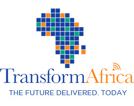

 Transform Africa 2013 shall be co-hosted by H.E. President Paul Kagame and Dr. Hamadoun I. Toure, Secretary General of the International Telecommunications Union (ITU) at the Kigali Serena Hotel on 28th- 31st October 2013. Over the past decade Broadband connectivity has greatly increased across Africa as we catch up with global ICT trends that are now largely driven by innovation – propelled by high-speed Internet and advancing mobile technology. The conference aims to pool together International participants to set a new agenda for Africa to leapfrog development challenges through the use and uptake of Broadband and related services. Read more